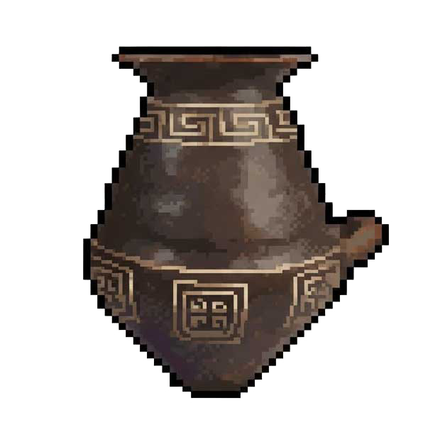
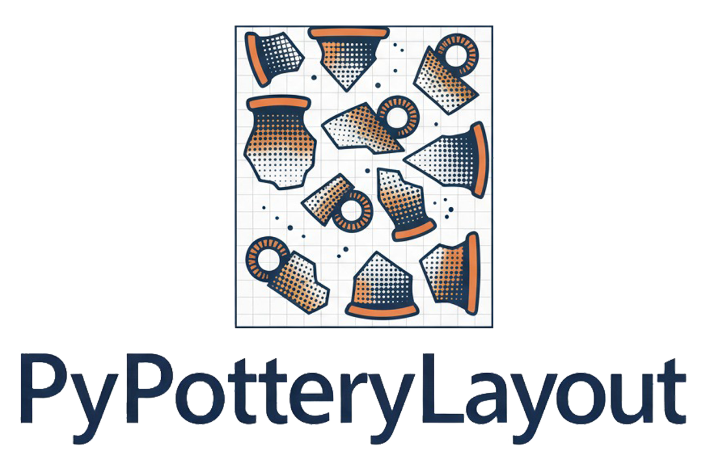

PyPottery Suite
PyPottery
Manually inking vessel drawings, building catalogue entries by hand from old publications, retyping the notes off a stack of inventory cards, working out reduction scales by hand: this is where most of the time in ceramic documentation actually goes, and it's a large part of why so much excavated material sits in a drawer for years before it ever gets published. PyPottery is a suite of five open-source tools that takes on each of these tasks computationally: extracting figures from monograph PDFs, digitizing field drawings, turning pencil sketches into publication-ready ink, tracing vessel profiles into clean vector curves, and assembling typological plates in seconds.
Everything runs on your own machine (You can use remote models to simplify certain tasks). The full source code is public, so anyone can check exactly how it works - and improve it.

Made by archaeologists for archaeologists
The idea for PyPottery grew out of a set of needs the author first ran into during university: let’s be honest, documenting pottery isn’t boring work, but it is work that takes a great deal of time. That “lost” time takes away from the other stages of research like typological analysis, comparison with other contexts, writing up results. PyPottery exists to drastically cut the time spent on repetitive, mechanical tasks, leaving more room for interpretation and research.
Using PyPottery has been shown to cut documentation time by roughly 60 times compared to the traditional routine of tracing paper, technical pens, and manually re-tracing everything in vector software.
That doesn’t mean it gets everything right on the first pass: a transcribed word sometimes needs a correction, a traced profile sometimes needs a nudge. PyPottery is built around that expectation: every stage gives you the chance to check and correct before moving on, so what comes out the other end is something you stand behind, not something you’re asked to trust blindly.
Getting Started
PyPottery is designed as an entirely modular suite rather than an all-or-nothing pipeline: you choose exactly how to use it according to your workflow, research needs, and personal documentation preferences:
- Don’t need profile vectorization? You don’t have to use PyPotteryTrace: keep your high-contrast inked drawings as your final raster publication figures.
- Prefer assembling catalog plates by hand? If physical layout and manual composition aid your typological reasoning and ceramic classification, you don’t have to use PyPotteryLayout: simply take the drawings from Ink, Scan, or Lens straight into your vector graphic editor or drafting desk.
- Only need specific extraction tasks? Use PyPotteryScan solely for transcribing handwritten cards into Excel, or PyPotteryLens just to mine monograph plates, without touching the downstream drawing tools.
For hardware requirements and environment setup on Windows, macOS, and Linux, see System Requirements and the Suite Installation Guide.
Suite Modules: The Archaeological Pipeline
Five integrated modules orchestrated into three operational phases, transforming raw archaeological field data and historical monographs into publication-grade plates and structured data.
From Physical Books & Legacy PDFs to Structured Data
Automates the tedious hours spent screenshotting monograph tables or hand-cropping drawing plates and retyping handwritten field notes — cutting transcription time by roughly 90%.
.xlsx or .csv), structured catalog records
YOLO Detection · Interactive Review · LLM Metadata · Cards Export

Handwriting OCR · Auto Vessel Cropping · Relational Excel
From Faded Pencil to Crisp SVG Vector Curves
Replaces the manual ordeal of tracing paper and point-by-point bezier retracing in vector software.

Diffusion · Diagnostic Line Weight · Batch Processing · CUDA / MPS / CPU

SAM 2 Interactive · Bézier Spline Editor · Layered SVG Export
From Individual Vessels to Publication-Ready Plates
Eliminates hand-recalculated reduction scales, hand-drawn millimeter bars, and tedious manual alignment of figures on the page.

Automatic Layout · Calibrated Metric Scale Bars · Automated Metadata Placement & Numbers · Vector PDF & SVG
From the Old Workflow to the New One
None of this replaces the archaeologist’s eye — the interpretive drawing itself, deciding what a fragment tells you, still starts on paper. What changes is everything that happens after that: the hours of clerical, repetitive work standing between a first pencil sketch and a page ready to send to a publisher.
Getting the material in
If you’re starting from a stack of hand-written excavation cards, the routine is usually: scan each card, open Photoshop or a similar program and crop out every drawing by hand, then read the context, stratigraphic unit, and inventory number off the card — often in decades-old handwriting — and type them into a spreadsheet, one row at a time. If you’re starting from a published monograph instead, it typically means taking screenshots of PDF pages one by one and re-cataloguing the plates yourself.
PyPotteryScan and PyPotteryLens take over this stage. Scan reads the drawings sheets and fills in the spreadsheet for you, so you’re checking and correcting rather than transcribing from scratch. Lens goes straight through a PDF and pulls out every figure automatically, no screenshotting involved.
Turning pencil into a finished drawing
This is traditionally where most of the hours disappear. A pencil drawing gets taped over with tracing film and gone over by hand with a technical pen to produce clean, publishable ink lines — and if you also need an editable digital version, it gets traced a second time, point by point, in Illustrator or similar software.
PyPotteryInk takes the pencil scan and produces the finished ink version directly. PyPotteryTrace then turns that into an editable vector drawing, with the rim, profile, section, and decoration kept as separate elements you can still adjust — not one flat outline.
Getting it ready for publication
Finally, individual drawings have to become a plate: arranging images on the page, working out the correct reduction scale for each one by hand, drawing scale bars, and typing captions and catalogue numbers.
PyPotteryLayout arranges the plate automatically — consistent scale, positioning, and captions across the whole page — and still hands you back a file you can open and fine-tune in your usual software afterward.
Methodological Principles
Automation stops where judgment starts
PyPottery automates the mechanical parts — cropping, transcribing, inking, laying out — never the archaeological judgment. Every output is something to check and confirm, not something asked to be trusted blindly.
A toolkit, not a rigid pipeline
PyPottery adapts to your workflow, not the other way around. Don't need profile vectorization? Skip Trace. Prefer manual plate layout to aid typological classification? Skip Layout. Automate only what you need and retain full research control.
Your data stays on your machine
Unpublished excavation data, stratigraphic coordinates, drawings, notes: all of it stays on your computer, with no account and no telemetry. The one exception is metadata extraction in PyPotteryLens, which currently calls a cloud LLM — the best option available today for that specific task.
Open source, not a black box
No license fees, no proprietary format locking your work in. The full source code is public, so anyone can check exactly how it works — and improve it.
Built for consumer hardware
No research-grade GPU required. PyPottery is developed and tested on ordinary laptops and desktops, with a CPU-only fallback for every module.
Academic Citations
If you use PyPottery tools in academic publications, excavation reports, or museum catalogues, please cite the corresponding peer-reviewed articles:
PyPotteryLens: An Open-Source Framework for Automated Pottery Digitisation
PyPotteryInk: A One-Step Diffusion Model for Archaeological Drawing Vectorization
Open Source, Independently Maintained
PyPottery is developed as an independent open-source project for the archaeological community. Source code, pretrained models, and issue tracking are on GitHub.